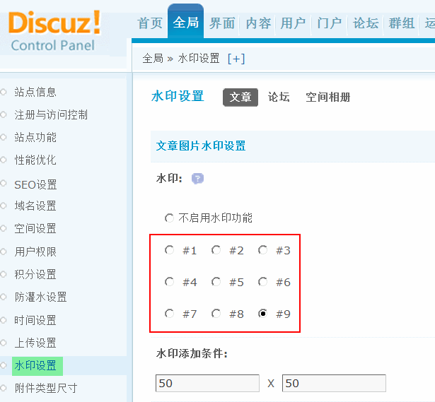
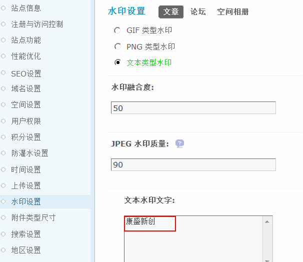
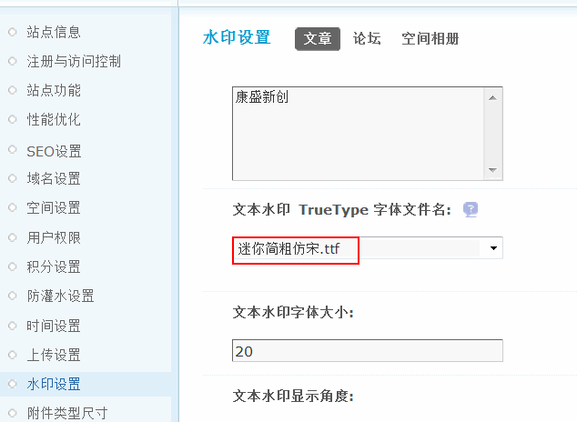
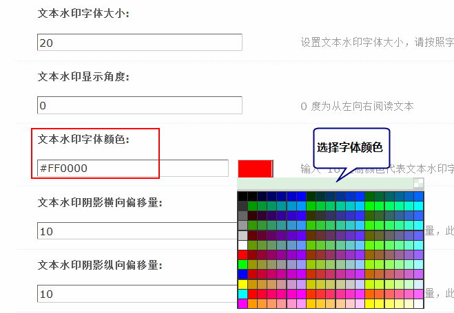
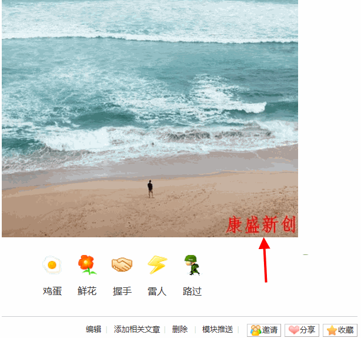

水印设置
水印功能，主要是为了防止其他地方盗用您站点的图片，另外水印图片设置为自己的网站名称等，可以起到宣传的作用，开启水印功能后，系统会自动为用户上传的 JPG/PNG/GIF 图片附件添加水印，这里包括文章、论坛和空间相册的水印设置。
一、文章图片水印设置
1、水印的开启
请在此选择水印添加的位置(3x3 共 9 个位置可选)。不支持动画 GIF 格式。如下1图所示：
2、水印添加条件
设置水印添加的条件，小于此尺寸的图片附件将不添加水印，默认为50*50
3、水印图片类型
共有三种类型，GIF类型、PNG类型和文本类型水印。
1)如果设置 GIF 类型的文件作为水印，水印图片为 static/image/common/watermark.gif。
2)如果设置 PNG 类型的文件作为水印，水印图片为 static/image/common/watermark.png。
你可替换水印文件以实现不同的水印效果，比如改为自己想要的图片。
3)如果设置文本类型的水印并且使用 GD 图片处理库，那么还需要 FreeType 库支持才能使用。
4、水印融合度
设置 GIF 类型水印图片与原始图片的融合度，范围为 1～100 的整数，数值越大水印图片透明度越低。
PNG 类型水印本身具有真彩透明效果，无须此设置。本功能需要开启水印功能后才有效。
5、JPEG 水印质量
设置 JPEG 类型的图片附件添加水印后的质量参数，范围为 0～100 的整数，数值越大结果图片效果越好，但尺寸也越大。本功能需要开启水印功能后才有效。
6、文本水印文字
如果你指定的 TrueType 字体为中文字体文件，那么你可以在文本水印中书写中文。如“康盛新创”
7、文本水印 TrueType 字体文件名
填写存放在 static/image/seccode/font/ch/ 或 static/image/seccode/font/en/ 目录下的 TTF 字体文件，支持中文字体。如使用中文 TTF 字体请使用包含完整中文汉字的字体文件。
8、文本水印字体大小
设置文本水印字体大小，请按照字体设置相应的大小。
9、文本水印显示角度
0 度为从左向右阅读文本。
10、文本水印字体颜色
可以直接选择颜色，也可以输入 16 进制颜色代表文本水印字体颜色。
11、文本水印阴影横向偏移量
设置文本水印阴影横向偏移量，此数值不宜设置的太大。
12、文本水印阴影纵向偏移量
设置文本水印阴影纵向偏移量，此数值不宜设置的太大。
13、文本水印阴影颜色
可以直接选择颜色，也可以输入 16 进制颜色代表文本水印阴影字体颜色。
14、文本水印横向偏移量(ImageMagick)
设置水印文本输出后向屏幕中央的横向的偏移值。本设置只适用于 ImageMagick 图片处理库。
15、文本水印纵向偏移量(ImageMagick)
设置水印文本输出后向屏幕中央的纵向的偏移值。本设置只适用于 ImageMagick 图片处理库。
16、文本水印横向倾斜角度(ImageMagick)
设置水印文本横向的倾斜角度。本设置只适用于 ImageMagick 图片处理库。
17、文本水印纵向倾斜角度(ImageMagick)
设置水印文本纵向的倾斜角度。本设置只适用于 ImageMagick 图片处理库。
假设以上面截图中的文本类型水印设置为准，预览水印效果如下图所示：
当发布文章并上传图片时，即可看到图片被打上水印了，如下图的效果：
二、论坛附件图片水印设置和空间相册图片水印设置同文章图片水印设置是一样的。